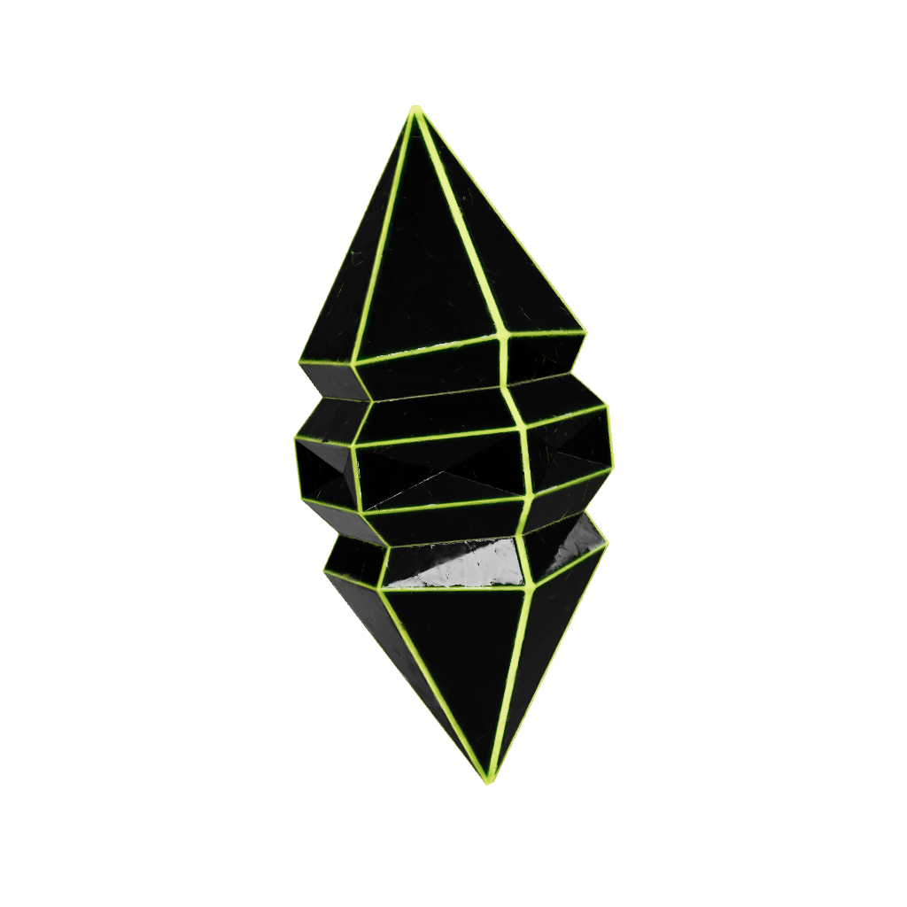
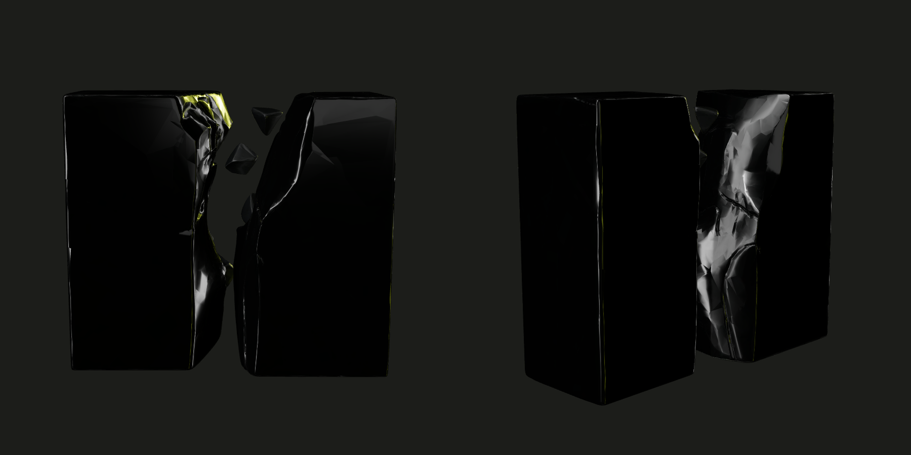
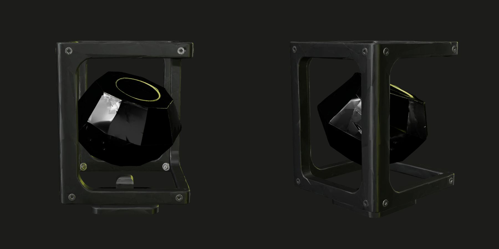
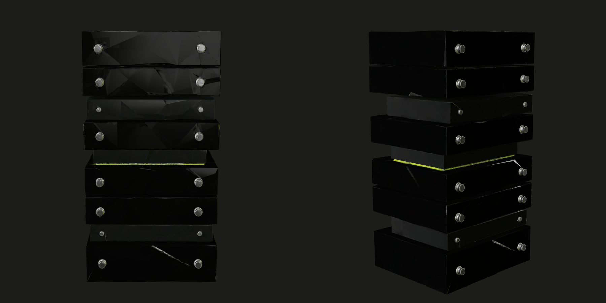
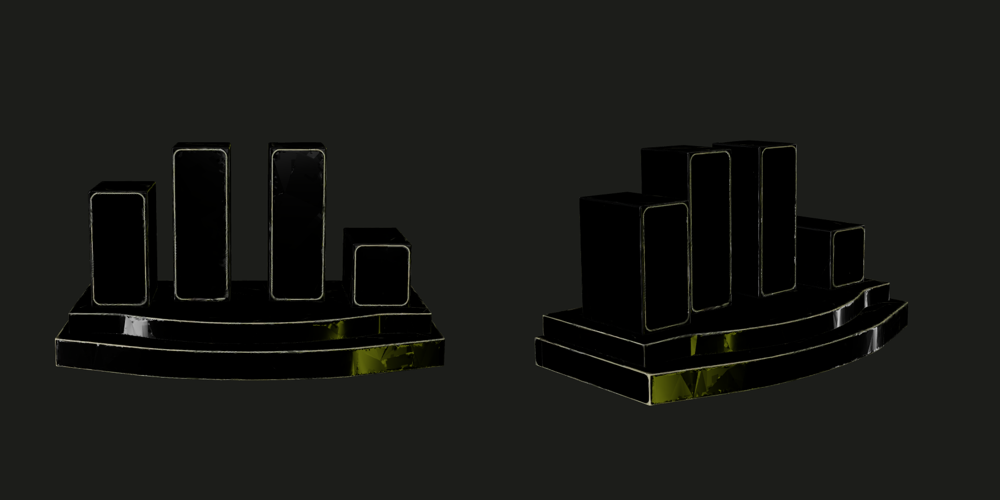
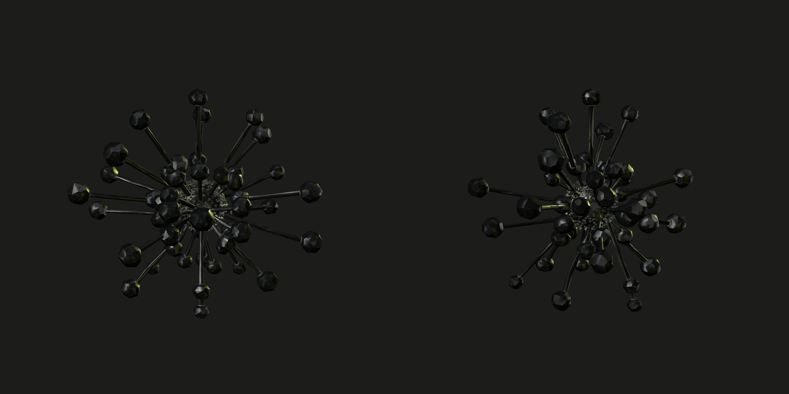
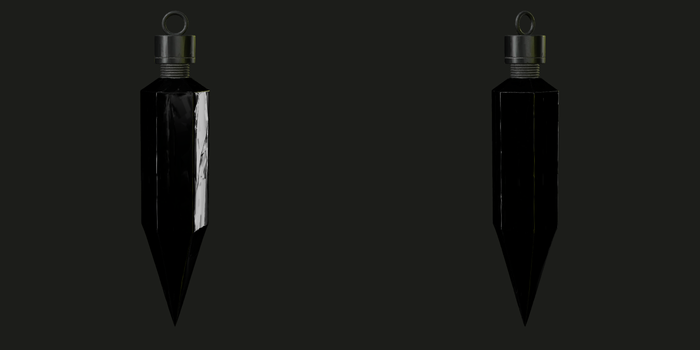

[:HOME]
_001 / 007
Every inference, a line of defense.
每一次推理，都是一道防線。
Sandbox fix, deterministic grade, validator co-sign, on-chain record.

[:PROBLEM]
_002 / 007
Compute is spent on puzzles. Exploits are not.
Web3 still spends AI compute on puzzles that only mint a souvenir. AxVigil points that compute at exploit fixes.
- Chainalysis, 2025 Crypto Theft Reaches $3.4 Billion More than $3.4 billion stolen through early December 2025. The largest service losses sit in a few attacks on private-key infrastructure.
- TRM Labs, 2026 Crypto Crime Report Code exploits were the most frequent hack category in 2025 (52 incidents, $350 million).
- Hacken, 2025 Yearly Security Report Smart-contract vulnerabilities, $512 million. The range above spans the TRM code-exploit total and this Hacken total.

[:HOW]
_003 / 007
Four steps, from challenge to record.
-
01
Challenge
A vulnerability family plus a seed becomes a renamed, reordered fresh rewrite. The agent does not receive the family, the seed, the hidden tests, or the reference fix.
-
02
Muse Spark fix
muse-spark-1.1, through the Meta Model API, proposes a patch and a proof of concept inside the sandbox. It is the first model with public records here.
-
03
Deterministic grading
Five checks. Both original and patch compile cleanly, the proof of concept must exploit the original, fail after the patch, leave state invariants passing, and stay inside the size cap.
-
04
Attest, co-sign, and record
2-of-3 permissioned validators co-sign an EIP-712 authorization (an on-chain SP1 verifier contract exists; a real SP1 prover is roadmap). The mint writes the collectible and an ERC-5192 soulbound skill record that follows the Agent ID.

[:PROOF]
_004 / 007
Live records.
Muse Spark is the first model with public records here. The four rows are on BSC testnet. Three minted on the 2-of-3 collectible, each on the first request. The earlier signature-replay mint is on the first collectible, later revealed LEGENDARY.
| Vulnerability family | Record | Signatures | Transaction |
|---|---|---|---|
| Price manipulation | Threshold token #1 · agent 8 · first request · 5,067 completion tokens | 2 / 3 | 0x720f…e3ab |
| Access control | Threshold token #2 · agent 9 · first request · 3,336 completion tokens | 2 / 3 | 0xf30d…5cd1 |
| Price manipulation | Threshold token #3 · agent 10 · first request · 4,560 completion tokens | 2 / 3 | 0xfb05…11dd |
| Signature replay | First collectible token #2 · agent 7 · revealed LEGENDARY | 1 | 0x8f13…c177 |
Access-control seed 1 and the bridge seed 7 were graded and were not these mints. The reference smoke mint is token #1 on the first collectible, tier COMMON, and is not part of the 4. The three threshold grades used the subprocess sandbox, not Docker. verify_evidence.py was OK for each of those CIDs.
Recompute this evidence
python3 scripts/verify_evidence.py backend/evidence/0xfb18e408a932f7573e8b05e3aa2c817318c902863f2d0afeb3d47d72caa9c081/manifest.jsonA graded session writes backend/evidence/<submissionHash>/manifest.json. The command checks the CID, the submission hash, the seed commitment, and runs the grader again. The hash above is threshold token #1.

[:BOARD]
_005 / 007
Same six families.
Four Muse Spark contestants, seed 1 on each vulnerability family. muse-spark-1.1, 1.2, and 1.3 solved 6/6. The 1.1 agentic run solved 4/6. The run used 83 of 114 requests on 2026-11-02, commit 2c45b7a.

[:ROADMAP]
_006 / 007
What is live, and what is not.
-
00Live · testnet
Phase 0 · BSC testnet
Vulnerability sandbox. Hidden-test grading. 2-of-3 validator mint. Evidence CIDs. Three Muse Spark threshold mints, with verify_evidence.py OK. Live grades used the subprocess sandbox.
-
01Planned
Phase 1
Replace MockAgentID with a real agent registry. External grader review. Reveal the threshold batch. Run the Docker sandbox on live grades.
-
02Planned
Phase 2
Scanning pilots on real protocols, and bounty integrations. More vulnerability families. An open validator set.
-
03Planned, not issued
Phase 3 · Utility token
Only if multi-validator grading is live and paying demand exists. The whitepaper describes it. Nothing here is an offer. No token has been issued.

[:FAQ]
_007 / 007
Straight answers.
Who are the validators?
Three, currently permissioned and run by the team. Each re-grades and signs only if their own grade passes. Two signatures were submitted on each of the three threshold mints. An open set is planned, not live. The owner of the threshold collectible is not a validator.
Do testnet records have monetary value?
No. A record cannot be bought or transferred. It pays nothing and is not a claim on revenue. No token has been issued, and this page is not an offer to sell one.
Is a record an audit?
No. A passing record shows a fix of a known class on a controlled fresh rewrite. It is not an audit, and it is not a promise that an agent can find unknown bugs.
How do I recompute a record?
Take the evidence bundle and run scripts/verify_evidence.py. It recomputes the CID and the submission hash, checks the seed commitment, and grades again. It was OK for the three threshold bundles.